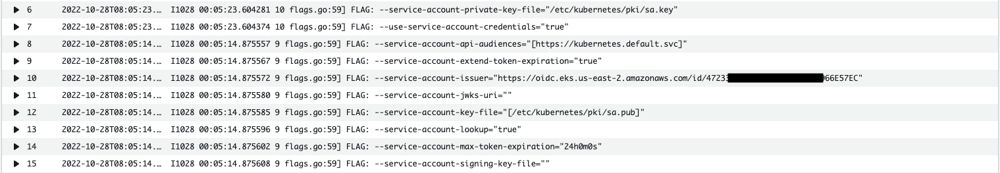

IRSA 中的 Token 剖析¶
本文档总结了将 AWS IAM 角色授予 AWS EKS 集群的服务账户的过程。 这些功能称为 IRSA（服务帐户的 IAM 角色 - IAM Role for Service Account ）。
Projected SA Token 实际上并不是由 EKS 集群的 OIDC Identity Provider 颁发，而是由 Kubernetes API Server 颁发，是 Kubernetes API Server 在颁发时使用与 OIDC Identity Provider 同样的私钥来颁发 Projected SA Token。被视为由集群的 OIDC Identity Provider 颁发的令牌。这也是后续 AWS STS 检查令牌颁发者并确认它是受信任的（联合）OIDC Identity Provider 的原因。使用 OIDC Identity Provider 的公钥验证 Projected SA Token ，如果确定它是有效的，AWS STS 会将凭证传输到 Pod 内的应用程序。之后，应用程序将获得一个使用凭证的 AWS IAM 角色并访问 AWS 服务。

[图 1]
AWS EKS 版本 1.14 或更高版本提供将 AWS IAM 角色分配给 EKS (K8S) 集群的服务账户的能力。通过此功能，使用已授予 AWS IAM 角色的服务账户的 Pod 可以使用 AWS 服务。 [图 1] 显示此过程分为 4 个步骤：Service Account 创建、Pod 创建、Service Account Token 创建/替换和 Service Account Token 使用。 [图 1] 的主要组成部分如下。
- AWS EKS OIDC Identity Provider：表示每个 EKS 集群拥有的专用 OIDC 身份提供商。它已注册（联合）为受 AWS IAM 信任的 OIDC 身份提供商。
- 私钥/公钥：AWS EKS OIDC 身份提供商和 Kubernetes API 服务器共享和使用相同的私钥/公钥。
- Pod Identity Webhook：代表 Kubernetes API Server 的 Mutating Webhook。当 Pod 使用分配了 AWS IAM 角色的服务账户时，它会扮演更改 Pod 规范的角色，以便授予服务账户的 AWS IAM 角色可以在 Pod 内部使用。
- Projected SA Token：指示 AWS IAM 角色被授予的服务账户的令牌。它是与 Kubernetes 默认使用的基本服务帐户令牌不同的令牌。与基本的 Service Account Token 不同，它设置了过期时间和受众，并且定期更换了 token。它具有 JWT Token 的形式。
创建服务帐户¶
要执行以下命令前，确保你有一个可用的 EKS 环境，或者参见参考资料 2 创建环境。
关联 OIDC Identity Provider 并且创建 Service Account ，执行：
cluster_name=eksworkshop-eksctl
export AWS_DEFAULT_REGION=us-east-2
eksctl utils associate-iam-oidc-provider \
--cluster $cluster_name \
--approve
serviceaccount_name=adminaccess
namespace_name=default
policy_arn=arn:aws:iam::aws:policy/AdministratorAccess
eksctl create iamserviceaccount \
--cluster=$cluster_name \
--name=$serviceaccount_name \
--namespace=$namespace_name \
--attach-policy-arn=$policy_arn \
--approve --override-existing-serviceaccounts
执行：
输出：
apiVersion: v1
kind: ServiceAccount
metadata:
annotations:
eks.amazonaws.com/role-arn: arn:aws:iam::123456789012:role/eksctl-eksworkshop-eksctl-addon-iamserviceac-Role1-xxxxxxxxxxxxxx
creationTimestamp: "2022-11-02T07:22:41Z"
labels:
app.kubernetes.io/managed-by: eksctl
name: adminaccess
namespace: default
resourceVersion: "4209"
uid: 7621dbcf-6c33-4c4d-881d-1f85d29b89ef
secrets:
- name: adminaccess-token-4cc6n
[文本 1]
要将 AWS IAM 角色分配给服务账户，您必须首先创建一个服务账户。此时，必须指定要分配给 eks.amazonaws.com/role-arn 注解的 AWS IAM 角色的 ARN。 [文本 1] 显示服务账户。您可以看到正在分配角色的 ARN 。
执行：
role_arn=$(kubectl get sa ${serviceaccount_name} \
-n ${namespace_name} -o json \
|jq -r '.metadata.annotations."eks.amazonaws.com/role-arn"')
aws iam get-role --role-name ${role_arn##*role/} --output json --query 'Role.AssumeRolePolicyDocument'
输出：
{
"Version": "2012-10-17",
"Statement": [
{
"Effect": "Allow",
"Principal": {
"Federated": "arn:aws:iam::123456789012:oidc-provider/oidc.eks.us-east-2.amazonaws.com/id/D3488XXXXXXXXXXXXXXXXXXXXXA21CD3"
},
"Action": "sts:AssumeRoleWithWebIdentity",
"Condition": {
"StringEquals": {
"oidc.eks.us-east-2.amazonaws.com/id/D3488XXXXXXXXXXXXXXXXXXXXXA21CD3:aud": "sts.amazonaws.com",
"oidc.eks.us-east-2.amazonaws.com/id/D3488XXXXXXXXXXXXXXXXXXXXXA21CD3:sub": "system:serviceaccount:default:adminaccess"
}
}
}
]
}
[文本 2]
[文本 2] 显示了 AWS IAM 角色授予 [文本 1] 中服务账户的信任关系。信任关系表示使用 AWS IAM 角色的身份验证方法和条件。 Principal 项指示需要对谁进行身份验证才能被授予 AWS IAM 角色。在[文本 2]中，您可以看到指定了 EKS Cluster 的 OIDC Identity Provider 的 URL。因此，这意味着在 EKS 集群内运行的 Pod 必须通过 EKS 集群的 OIDC 身份提供者的身份验证才能被授予 AWS IAM 角色。
获取 AWS IAM Role 的方法在 Trust Relationship 的 Action 中指定，AssumeRoleWithWebIdentity 在 [文本 2] 的 Action 项中指定。 AssumeRoleWithWebIdentity 表示通过 OIDC Identity Provider 颁发的 JWT Token 进行身份验证。 Condition 表示 JWT Token 中必须包含的声明条件。 [文本 2] 表示应在 aud Claim 中指定“sts.amazonaws.com”，在 sub Claim 中指定“system:serviceaccount:default:adminaccess”。
在 IRSA 过程中，Projected SA Token 用作 JWT Token，Projected SA Token 满足上述所有条件。因此，通过使用 Projected SA Token，您可以获得和使用分配给服务账户的 AWS IAM 角色。
创建 Pod 并使用 SA¶
创建一个 Pod 并且指定以之前创建的 Service Account 运行，然后观察并进行 Token 验证。执行：
cat >sleep-pod.yaml <<-EOF
apiVersion: v1
kind: Pod
metadata:
name: sleep-pod
spec:
serviceAccountName: adminaccess
containers:
- name: my-aws-cli
image: amazon/aws-cli:latest
command: ['sleep', '360000']
restartPolicy: Never
EOF
kubectl apply -f sleep-pod.yaml
执行：
输出：
...
spec:
containers:
- command:
- sleep
- "360000"
env:
- name: AWS_STS_REGIONAL_ENDPOINTS
value: regional
- name: AWS_DEFAULT_REGION
value: us-east-2
- name: AWS_REGION
value: us-east-2
- name: AWS_ROLE_ARN
value: arn:aws:iam::123456789012:role/eksctl-eksworkshop-eksctl-addon-iamserviceac-Role1-1JL3FI83YZ5ZN
- name: AWS_WEB_IDENTITY_TOKEN_FILE
value: /var/run/secrets/eks.amazonaws.com/serviceaccount/token
image: amazon/aws-cli:latest
imagePullPolicy: Always
name: my-aws-cli
resources: {}
terminationMessagePath: /dev/termination-log
terminationMessagePolicy: File
volumeMounts:
- mountPath: /var/run/secrets/kubernetes.io/serviceaccount
name: kube-api-access-srtw7
readOnly: true
- mountPath: /var/run/secrets/eks.amazonaws.com/serviceaccount
name: aws-iam-token
readOnly: true
...
volumes:
- name: aws-iam-token
projected:
defaultMode: 420
sources:
- serviceAccountToken:
audience: sts.amazonaws.com
expirationSeconds: 86400
path: token
- name: kube-api-access-srtw7
projected:
defaultMode: 420
sources:
- serviceAccountToken:
expirationSeconds: 3607
path: token
- configMap:
items:
- key: ca.crt
path: ca.crt
name: kube-root-ca.crt
- downwardAPI:
items:
- fieldRef:
apiVersion: v1
fieldPath: metadata.namespace
path: namespace
...
[文本 3]
为了在 Pod 内执行 AssumeRoleWithWebIdentity，需要 Pod 运行所在的 Kubernetes 集群区域、要授予的 AWS IAM 角色以及 JWT Token 的位置信息。这些必要的信息被 EKS 控制平面中存在的 Pod Identity Webhook 强行注入到 Pod 中。当创建使用具有 AWS IAM 角色的服务账户的 Pod 时，Pod Identity Webhook 通过更改（变异）Pod 的规范来注入信息。 [文本 3] 显示了由于 Pod Identity Webhook 而更改的Pod。
Pod Identity Webhook 创建并挂载一个名为 AWS_DEFAULT_REGION、AWS_REGION、AWS_ROLE_ARN、AWS_WEB_IDENTITY_TOKEN_FILE 环境变量和 aws-iam-token 的 Projected SA Token 卷。Projected SA Token 存在于名为 aws-iam-token 的 Projected SA Token 卷中。您可以看到 Projected SA Token 卷设置包括过期时间和 Audience 设置。
Pod Identity Webhook 添加的 “AWS_*” 环境变量和 “aws-iam-token” Token 被 AWS SDK 使用。 AWS SDK 通过设置的环境变量信息执行 AssumeRoleWithWebIdentity 操作。在 [文本 3] 中，您可以看到默认为每个 Pod 分配的默认 Service Account 设置仍然存在。
执行：
上述命令输出中可以看到包含
caBundle ，该证书和以下 configmap 中的证书相同
执行：
服务帐户令牌创建 / 替换¶
为了执行 AssumeRoleWithWebIdentity 操作，必须使用 JWT 形式的 ID Token，其中包含 OIDC 身份提供者颁发的身份验证信息。但是 Kubernetes API Server 并没有收到 OIDC Identity Provider 下发的 ID Token，而是直接创建一个 JWT Token 注入到 Pod 中。为了让 Kubernetes API Server 代表 OIDC Identity Provider 生成 JWT Token，OIDC Identity Provider 使用的 Private/Public Key 也被 API Server 使用。
在 Kubernetes API Server 中，JWT Token 生成的必要设置是通过以下参数进行的。
- service-account-signing-key-file ：指定用于签署服务帐户令牌的密钥文件的路径。期望指定 EKS 集群的 OIDC 身份提供者的私钥。
- service-account-key-file ：指定用于验证签名服务帐户令牌的密钥文件的路径。期望指定 EKS 集群的 OIDC 身份提供者的公钥。
- service-account-issuer ：设置 OIDC Identity Provider 的 URL，即 Service Account Token 的颁发者。预计 EKS 集群的 OIDC 身份提供者 URL 设置在 EKS 的 Kubernetes API 服务器中。
在 cloudwatch log insight 页面中进行查询，选中你的 eks 控制平面的日志组，并且选择日期范围覆盖集群创建时间点。
查询结果：

{kind=link}
执行下面命令，并将输出复制到 jwt.io
kubectl exec -it pod/sleep-pod -n ${namespace_name} -- cat /var/run/secrets/eks.amazonaws.com/serviceaccount/token
# |jwt decode --json --iso8601 - |tee /tmp/$$.eks-token
jwt 解析输出：
{
"header": {
"alg": "RS256",
"kid": "5d46b7af567c7c87b2a87603c8b144855bae1fc7"
},
"payload": {
"aud": [
"sts.amazonaws.com"
],
"exp": "2022-11-03T07:23:53+00:00",
"iat": "2022-11-02T07:23:53+00:00",
"iss": "https://oidc.eks.us-east-2.amazonaws.com/id/D3488XXXXXXXXXXXXXXXXXXXXXA21CD3",
"kubernetes.io": {
"namespace": "default",
"pod": {
"name": "sleep-pod",
"uid": "b6c05863-18b9-46f1-9155-0a300ab5ceee"
},
"serviceaccount": {
"name": "adminaccess",
"uid": "7621dbcf-6c33-4c4d-881d-1f85d29b89ef"
}
},
"nbf": "2022-11-02T07:23:53+00:00",
"sub": "system:serviceaccount:default:adminaccess"
}
}
[文本 4]
[文本 4] 显示了对 Pod 的 Projected SA 令牌执行 JWT Deconding 时的内容。 根据 service-account-issuer 参数，在 Issuer(iss) Claim 中设置了 EKS 集群的 OIDC Identity Provider 的 URL。 在 [文本 3] 中，由于 Audience 中设置了“sts.amazonaws.com”，Audience(aud) Claim 中也设置了“sts.amazonaws.com”。
在 Subject(sub) Claim 中设置了相关内容。 Expiration(exp) 您还可以检查 Claim 中是否有过期时间。 可以看出 [文本 3] 中 Projected SA Token 的内容满足 [文本 2] 中 AWS IAM Role 的 Condition 条件。
使用服务帐户令牌¶
Pod 内的 App 通过 AssumeRoleWithWebIdentity 操作向 AWS STS 发送 Projected SA Token 以获取 Credential。收到 Projected SA 令牌后，AWS STS 检查令牌颁发者并确认它是受信任的（联合）OIDC 身份提供商。如果确认 OIDC 身份提供者是可信的，则使用 OIDC 身份提供者的公钥验证投影 SA 令牌。如果确定它是有效的 Projected SA 令牌，AWS STS 会将凭证传输到 Pod 内的应用程序。之后，应用程序将获得一个使用凭证的 AWS IAM 角色并访问 AWS 服务。
Projected SA Token 实际上并不是由 EKS 集群的 OIDC Identity Provider 颁发，而是由 Kubernetes API Server 颁发，而是 Kubernetes API Server 在颁发时使用与 OIDC Identity Provider 一起使用的私钥来颁发 Projected SA Token。被视为由集群的 OIDC 身份提供者颁发的令牌。
以下步骤通过集群 Endpoint 手工申请 Token ，并使用 OIDC Identity Provider 的公钥进行签名验证，验证通过，可以表明该 Token 中包含的签名是由 OIDC Identity Provider 的私钥签发的。
手工申请一个token¶
可以手工执行 curl 命令，从 API Server 获取令牌，参照如下代码：
PAYLOAD=$(aws eks describe-cluster \
--name ${cluster_name} \
--query 'cluster.{CA: certificateAuthority.data,Endpoint: endpoint}')
echo $PAYLOAD | jq -rc .CA | base64 --decode > /tmp/public_cert
ENDPOINT=$(echo $PAYLOAD | jq -rc .Endpoint)
TOKEN=$(aws eks get-token \
--cluster-name ${cluster_name} | jq -rc .status.token)
curl -v -X "POST" --cacert /tmp/public_cert \
-H 'Content-Type: application/json; charset=utf-8' \
-H "Authorization: Bearer "${TOKEN} \
-d $'{"kind":"TokenRequest","apiVersion":"authentication.k8s.io/v1","spec":{"audiences":["sts.amazonaws.com"]}}' $ENDPOINT/api/v1/namespaces/${namespace_name}/serviceaccounts/${serviceaccount_name}/token > /tmp/$$.out 2> /tmp/$$.err
# get your curl version
cat /tmp/$$.err |grep user-agent
# get your token
cat /tmp/$$.out |jq -r '.status.token'
申请 Token 成功或者失败信息可以从 api server audit 日志中获取详细信息，从之前命令中获取 curl 版本信息，可以有效的查询 Log Insights。
验证 token¶
- 打开页面 jwt.io
- 复制 Token 到 Encoded 框中，并且将右侧 kid 的值复制到下面命令行中
- 将如下命令的 key 输出 (json format) 复制到右侧 VERIFY SIGNATURE 中
- 如果提供正确的公钥，将在右侧出现蓝色
Signature Verified字样。否则是红色的Invalid Signature
IDP=$(aws eks describe-cluster --name $cluster_name --query cluster.identity.oidc.issuer --output text)
# kid=$(cat /tmp/$$.eks-token |jq -r '.header.kid')
kid=<copy-paste-kid-here>
curl $(curl -s $IDP/.well-known/openid-configuration | jq -r '.jwks_uri') |jq -r '.keys[] | select (.kid=="'"${kid}"'")'
[文本 6]
[文本 6] 中使用的 kid 在 [文本 4] 中使用 jwt 命令输出时也可以看到。
结论¶
Projected SA Token 实际上是由 Kubernetes API Server 颁发，使用与 OIDC Identity Provider 同样的私钥来颁发。使用 OIDC Identity Provider 的公钥可以验证 Projected SA Token 的有效性。
参考链接¶
- https://ssup2.github.io/theory_analysis/AWS_EKS_Service_Account_IAM_Role/
- create eks lab environment
- verify-jwt-token-with-nodejs
- eks-request-jwt-token-manually
- https://aws.amazon.com/blogs/opensource/introducing-fine-grained-iam-roles-service-accounts/
- https://aws.amazon.com/blogs/containers/diving-into-iam-roles-for-service-accounts/
- https://github.com/aws/amazon-eks-pod-identity-webhook/blob/master/SELF_HOSTED_SETUP.md
- https://medium.com/dataseries/public-claims-and-how-to-validate-a-jwt-1d6c81823826